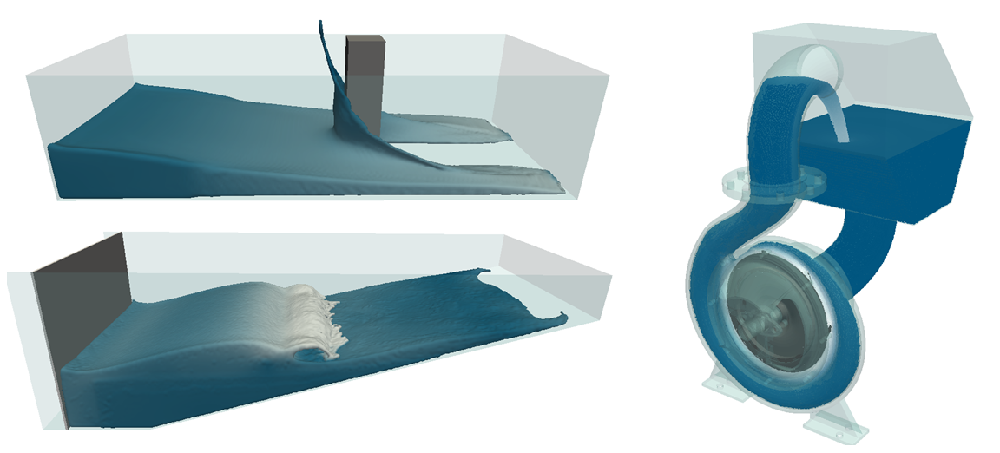

Overview
Some demonstration cases are included in the DualSPHysics package (Figure 1); such as a dam break interacting with an obstacle in a tank, waves on a beach created by a piston or the real geometry of a pump mechanism that translates water within a storage tank.

As shown in , the test cases include...
The different test cases in Figure 1 are described in the following sections. The scripts (.bat in Windows and .sh in Linux) are presented and the different command line instructions to execute the different programs are described. The XML files are also explained in detail to describe the execution parameters and the different labels to plot boundaries, fluid volumes, movements, etc.
For each case there are 4 options;
- wCase_win64_CPU.bat (windows on CPU)
- wCase_win64_GPU.bat (windows on GPU)
- xCase_linux64_CPU.sh (linux on CPU)
- xCase_linux64_GPU.sh (linux on GPU)
Since many 3-D applications can be reduced to a 2-D problem, the executable of DualSPHysics can also perform 2-D simulations, however this option is not fully optimized. A 2-D simulation can be achieved easily by imposing the same values in the Y-direction (<pointmin> = <pointmax> in the input XML file). For example, see the two-dimensional 01_DamBreak indicated in Figure 7-2. Thus, the initial configuration is a 2-D system and DualSPHysics will detect automatically that the simulation must be carried out using the 2-D formulation.
Main examples¶
The different CASES provided are intended as worked examples for users to create their own cases, to learn the different available options and what post-processing tools can be used. The following list summarises the testcases that can be found in examples/main/:
01_DAMBREAK
- 3-D dam break flow impacting on a structure: numerical velocity, pressure and force are computed.
- 2-D dam break and validation data from [Koshizula and Oka, 1996] experiment.
02_PERIODICITY
- 2-D case with Periodicity in X direction.
- Delta-SPH is also used.
03_MOVINGSQUARE
- 2-D case with square that moves with rectilinear movement.
- Example of no gravity so parameter “b” needs to be specified by the user.
- Shifting is used for this internal flow (no need to detect free surface).
04_EXTERNALFORCES
- External acceleration is loaded from a file and applied to two different volumes of fluid.
- Delta-SPH is also used.
05_SLOSHINGTANK
- 2-D sloshing tank that reads external acceleration from a file.
- 2-D sloshing tank that reads the rotational movement of the tank itself from a file.
- Validation with SPHERIC Benchmark #10 where pressure is computed.
06_WAVEMAKER
- 3-D tank with Periodicity in Y direction and piston with sinusoidal movement.
- Delta-SPH and Shifting are used.
07_WAVEMAKERFILE
- 2-D tank with piston motion loaded from external file and external structure (STL).
Validation data from CIEMito experiment: numerical computation of wave surface elevation and force exerted onto the wall.
08_WAVESFLAP
- 2-D regular waves generated with flap and comparison with 2nd order wave theory (beach).
- 2-D irregular waves generated with flap and comparison with 2nd order wave theory (beach).
09_WAVESPISTON
- 2-D regular waves with piston and comparison with 2nd order wave theory (beach & damping).
- 2-D irregular waves with piston and comparison with 2nd order wave theory (beach & damping).
10_WAVESPISTONAWAS
- 2-D regular waves generated with piston interacting with a vertical wall with and without AWAS
- 2-D regular waves generated with piston interacting with a trapezoidal dike with and without AWAS
- Forces against the wall and dike with and without AWAS are compared.
- Overtopping in the case of dike with and without AWAS is also compared.
11_FLOATING
- 3-D floating box in a wave tank with Periodicity in Y direction and piston with sinusoidal movement. Delta-SPH is used.
- 2-D falling sphere that uses laminar+SPS viscosity. Validation data from [Fekken, 2004] and [Moyo and Greenhow, 2000].
12_FLOATINGWAVES
- 2-D floating box under the action of non-linear waves in a tank with flap that reads rotational motion from an external file and uses laminar+SPS viscosity.
- Validation data (motions of the box) from [Hadzic et al., 2005].
- 2-D floating box under the action of regular waves in a tank with piston.
- Validation data (motions of the box) from [Ren et al., 2015].
13_PUMP
- 3-D external geometries are imported (STL) and filling algorithm is used.
- Rotational movement is imposed.
14_DEM
- 2-D case only with DEM of a ball that impacts with blocks. Example without fluid particles.
- 3-D dam-break and blocks where interaction between blocks and with walls used DEM and properties of materials. Delta-SPH is also used.
- 2-D case with 2000 floating objects that interact in terms of DEM approach.
15_POISEUILLE
- 2-D case of Poiseuille flow with laminar+SPS viscosity and using high resolution.
16_SOLITARYWAVES
- 2-D solitary wave generated with 3 different theories.
- 2-D case of triple solitary waves.
17_WAVERUNUP
- 3-D regular waves interacting with a layer armour breakwater (STL). Gauge system is used to compute Run-up.

7.1.2 PERIODICITY
This testcase is an example of periodicity applied to 2-D case where particles that leave the domain through the right wall are introduced through the left wall with the same properties but where the vertical position can change (with an increase of +0.3 in Z-position). wCasePeriodicity.bat (xCasePeriodicity.sh in linux) file summarises the tasks to be carried out using the different codes.
Different instants of the CasePeriodicity simulation are shown in Figure 7-10 where the PartFluid_xxxx.vtk of the fluid particles and the CasePeriodicity_Bound.vtk are depicted.

Figure 7-10. Different instants of the CasePeriodicity simulation. Colour represents Id of the fluid particles.
7.1.3 MOVINGSQUARE
A 2-D case without gravity is simulated. A square box is moving with uniform velocity (<mvrect>) inside the numerical tank – see SPHERIC Benchmark #2. Gravity is set to zero, which means that parameter “b” cannot be automatically computed following equation of state (Eq. 14) and needs to be specified in <constantsdef> (<b value="1.1200e+05" auto="false" />). The value of “b” is chosen to ensure that the speed of sound, cs, is at least 10 times the maximum particle velocity to maintain weak compressibility, that is vmax, cs ≥ 10 vmax. Shifting is used for this internal flow to prevent the appearance of voids in the fluid. The case can be also executed without applying shifting to observe the problem of the voids.
wCaseMovingSquare.bat (xCaseMovingSquare.sh in linux) file summarises the tasks to be carried out using the different codes. The same case but without using shifting can be also executed to observe how the voids behind the moving object are not avoided if shifting is not applied.
Different instants of the CaseMovingSquare simulation are shown in Figure 7-11 where the PartFluid_xxxx.vtk of the fluid particles and the Square_xxxx.vtk are depicted.

Figure 7-11. Different instants of the CaseMovingSquare simulation. Colour represents the velocity of the fluid.
7.1.4 EXTERNALFORCES
This is a testcase where external forces are applied to the system. The external forces can be loaded from the files CaseForcesData_0.csv and CaseForcesData_1.csv.
wCaseForces.bat (xCaseForces.sh in linux) file summarises the tasks to be carried out using the different codes.
Figure 7-12 shows the external forces that will be applied to the fluid particles inside the numerical tank. This mimics the effect of a box being accelerated in one direction and rotating around the y-axis.

Figure 7-12. External forces applied to the fluid particles in CaseForces.
Different instants of the simulation can be observed in Figure 7-13 where the PartFluid_xxxx.vtk of the fluid particles and the file CaseForces_Dp.vtk are depicted. The colours of the fluid particles correspond to the two different MK values.

Figure 7-13. Different instants of the CaseForces simulation.
7.1.5 SLOSHINGTANK
A 2-D sloshing tank is simulated in two different forms:
a) CaseSloshingAcc: External acceleration is loaded from the CSV file CaseSloshingAccData.csv and applied to the fluid particles.
b) CaseSloshingMotion: Rotational movement is applied to the tank using prescribed rotation defined in the text file CaseSloshingMotionData.dat (<mvrotfile>) that contains time and degrees (as shown in Figure 7-14).

Figure 7-14. Rotation movement prescribed in file CaseSloshingMotion.dat.
wCaseSloshing.bat (xCaseSloshing.sh in linux) file summarises the tasks to be carried out using the different codes for the two cases. Different instants of the simulation can be observed in Figure 7-15 where the files PartAll_xxxx.vtk are depicted.

Figure 7-15. Different instants of the CaseSloshingMotion simulation. Colour represents the velocity of the fluid.
Validation with SPHERIC Benchmark #10 is also included. Experimental pressure is available in EXP_Pressure_SPHERIC_Benchmark#10.txt. Numerical pressures are computed using MeasureTool in both cases. CaseSloshingAcc reads a text file with the fixed position (-0.45, 0, 0.093) while CaseSloshingMotion reads a CSV file with the position of the sensor at each time since the point to measure also moves with the tank.
Hence, numerical pressure is computed at the location of the experimental sensor (PointsPressure_Incorrect) and at a distance of 1.5h from the boundaries (PointsPressure_Correct) as shown in Figure 7-16. The first probe produces no pressure results as the number of fluid particles for the interpolation is too small, while the second shows the pressure impact by the water flow.

Figure 7-16. Position of incorrect and correct pressure probes in CaseSloshing.
Note that the probes are not automatically associated with the smoothing length h and their position has to be changed manually if the resolution (or particle size “dp”) changes. Also, note that by increasing resolution the gap is reduced. Using BoundaryVTK, the user can compute the time history of the position of the moving point initially at 1.5_h_ of the wall to obtain new positions to be used with MeasureTool.
Figure 7-17 shows the numerical pressure computed using MeasureTool in both cases and compared with the experimental signal. Results improve using higher resolution than the one used here.

Figure 7-17. Experimental and numerical pressure at Sensor1 in CaseSloshing.
7.1.6 WAVEMAKER
CaseWavemaker simulates several waves breaking on a numerical beach. A wavemaker is performed to generate and propagate the waves. In this testcase, a sinusoidal movement (<mvrectsinu>) is imposed to the boundary particles of the wavemaker and Periodicty in Y direction is also used. wCaseWavemaker.bat (xCaseWavemaker.sh in linux) file describes the execution task to be carried out in this directory.
The files MotionPiston_xxxx.vtk containing the position of the wavemaker at different instants and Surface_xxxx.vtk containing the surface representation are used to display the results in Figure 7-18:

Figure 7-18. Different instants of the CaseWavemaker simulation. Colour represents surface velocity.
Using the MeasureTool code, numerical wave elevations have been computed in the list of points described in the file CaseWavemaker_PointsHeights.txt. So that, PointsHeights_h_xxxx.vtk are now depicted in Figure 7-19.

Figure 7-19. Different instants of the CaseWavemaker simulation. Colour represents wave elevation.
MeasureTool is also used to compute the wave elevation at one wave gauge located at x=1, y=1 (CaseWavemaker_wg0_3D.txt) and the output result can be analysed in WG0_Height.csv.
7.1.7 WAVEMAKERFILE
This 2-D case aims to mimic an experiment performed in CIEMito wave flume at the Universitat Politècnica de Catalunya (UPC) in Barcelona. The movement of the piston is prescribed in the file CaseWavemaker2D_Piston_Movement.dat (<mvfile>) and an external structure is loaded (CaseWavemaker2D_Structure.stl).
The wCaseWavemaker2D.bat (xCaseWavemaker2D.sh in linux) file describes the execution tasks to be carried out in this directory.
Different instants of the CaseWavemaker2D simulation are shown in Figure 7-20 where the PartFluid_xxxx.vtk of the fluid particles and the PartMoving_xxxx.vtk of the piston are depicted.

Figure 7-20. Different instants of the CaseWavemaker2D simulation. The three black dots represent the wave gauges _wg1, wg2, wg3_ used for validation. Colour represents the horizontal velocity of the fluid.
This case also includes validation data from the CIEMito experiment: wave surface elevation at different locations (CaseWavemaker2D_wg1_2D.txt, CaseWavemaker2D_wg2_2D.txt and CaseWavemaker2D_wg3_2D.txt) and force exerted onto the right wall.
Figure 7-21 shows the experiment and numerical time series of wave surface elevation at wg1 obtained using MeasureTool.

Figure 7-21. Numerical and experimental wave elevation at wg1 in CaseWavemaker2D.
This case also computes forces exerted against the structure in the final of the tank. The force is computed using ComputeForces as the summation of the acceleration values of the boundary particles that form the front wall (id:1616-1669) multiplied by mass. Figure 7-22 shows the time series of the numerical force. Note that initial hydrostatic force is 20.72 N (the initial depth in front of the wall is 0.065 m)

Figure 7-22. Force (X-component) exerted on the right wall in CaseWavemaker2D.
7.1.8 WAVESFLAP
Several examples of automatic generation of waves are included in the new package: monochromatic (regular) waves and irregular waves are generated using flap- and piston-type wavemakers.
Second-order waves are simulating (Figure 7-23), corresponding to results shown in [Altomare et al., 2017]. The wave height, wave period, water depth at wave generation, wave steepness and wavelength are summarised in the following table. The quantities H and T refer to the wave height and wave period of the first-order component of the monochromatic waves; Hm0 and Tp are the significant wave height and peak wave period of the irregular wave train, respectively.

Figure 7-23. Wave conditions on Le Mehaute abacus [Le Mehaute, 1976].
This first testcase includes wave generation using FLAP.
wCaseFlapBeach_REG.bat (xCaseFlapBeach_REG.sh in linux) file describes the execution tasks to be carried out in this directory to create monochromatic waves (<flap>). In order to reproduce only incident waves, passive absorption is used here to prevent reflection. In this case the passive absorption consists of a dissipative beach at the end of the tank.
Different instants of the CaseFlapBeach_REG simulation are shown in Figure 7-24 where the PartFluid_xxxx.vtk of the fluid particles and the PartFlap_xxxx.vtk of the flap are depicted.

Figure 7-24. Different instants of the CaseFlapBeach_REG simulation. Colour represents the horizontal velocity of the fluid.
Numerical results using MeasureTool are compared with theoretical ones (that can also be computed by DualSPHysics using option <savemotion> in the XML configuration). Figure 7-25 shows the comparison of numerical water surface elevation measured (at a distance of 6 m of the piston) and numerical vertical and horizontal velocity (at 6 m of the piston and 0.26 m from still water level) with the theoretical results using second-order solutions. Note that numerical results agree with second-order theory, which validates the correct generation and propagation using DualSPHysics using flap.

Figure 7-25. Comparison between theoretical and numerical water surface elevation and orbital velocities for regular waves in CaseFlapBeach_REG.
The second case computes the movement of a piston to generate irregular. A pre-defined JONSWAP spectrum is used to characterised the irregular wave train in the frequency domain (<flap_spectrum>).
wCaseFlapBeach_IRREG.bat (xCaseFlapBeach_IRREG.sh in linux) file describes the execution tasks to be carried out in this directory to create irregular random waves.
Figure 7-26 also shows the comparison of numerical wave surface elevation and horizontal velocity (obtained with MeasureTool) with the theoretical solution (using <savemotion>). Good agreement is also observed for irregular waves. Only first-order wave generation for irregular waves is implemented for flap-type wavemaker. Therefore, possible differences between the numerical and theoretical results are expected. Yet, in the case shown in Figure 7-26 these differences are negligible.

Figure 7-26. Comparison between theoretical and numerical water surface elevation and orbital velocities for regular waves in CaseFlapBeach_IRREG.
The file “CaseFlap_SPHvsTheory.ods” includes all these comparisons.
7.1.9 WAVESPISTON
The same wave condition shown in Figure 7-23 is now created using a piston-type wavemaker. Regular (<piston>) and random (<piston_spectrum>) waves are created. Two different passive absorption systems are used to avoid reflection at the end of the tank; a dissipative beach and a sponge layer or damping (<damping>).
Therefore, different scripts can be used here:
* wCasePistonBeach_REG.bat (xCasePistonBeach_REG.sh in linux)
* wCasePistonBeach_IRREG.bat (xCasePistonBeach_IRREG.sh in linux)
* wCasePistonDamping_REG.bat (xCasePistonDamping_REG.sh in linux)
* wCasePistonDamping_IRREG.bat (xCasePistonDamping_IRREG.sh in linux)
Different instants of the CasePistonBeach_REG simulation are shown in Figure 7-27 where the PartFluid_xxxx.vtk of the fluid particles and the PartPiston_xxxx.vtk of the piston are depicted.

Figure 7-27. Different instants of the CasePistonBeach_REG simulation. Colour represents the horizontal velocity of the fluid.
Note how the same instants are shown in the images of Figure 7-27 (using piston) and the images of Figure 7-24 (using flap), and it can be observed how the same waves are created using both wavemakers. Figure 7-28 proves the similar behaviour of both passive absorption systems in the case of regular waves; dissipative beach and sponge layer (damping). Same behaviour is obtained for the irregular tests.

Figure 7-28. Same instant of the CasePistonBeach_REG and CasePistonDamping_REG simulations. Colour represents the horizontal.
Figure 7-29 shows the comparison of numerical wave surface elevation measured (at a distance of 6 m of the piston) and numerical vertical and horizontal velocity (at 6 m of the piston and 0.26 m from still water level) with the theoretical result using second-order solutions for the case of regular waves. Note that numerical results agree with second-order theory, which validates the correct generation and propagation using DualSPHysics using piston (as shown in [Altomare et al., 2017]).

Figure 7-29. Comparison between theoretical and numerical water surface elevation and orbital velocities for regular waves in CasePistonBeach_REG.
The file “CasePiston_SPHvsTheory.ods” includes more comparisons between the theoretical and numerical results for both regular and irregular waves and for both passive absorptions systems (beach and the sponge layer). Similar accuracy was obtained in all the cases.
7.1.10 WAVESPISTONAWAS
This third cases focused on wave generation includes now the option of using Active Wave Absorption System (AWAS) that is only implemented for the piston-type wavemaker in DualSPHysics.
The XML includes this option with <piston> or <piston_spectrum> using <awas_zsurf>
The AWAS system will absorb the reflected waves that impact with the numerical piston. Therefore, no passive absorption systems are used at the end of the tank because the aim is to absorb the reflected waves while the piston generates the incident ones.
A case with a vertical wall and other with a trapezoidal dike can be executed to analyse the effects of using AWAS. Therefore, different scripts can be used here: * wCasePistonWallAWAS_REG.bat (xCasePistonWallAWAS_REG.sh in linux) * wCasePistonWallNoAWAS_REG.bat (xCasePistonWallNoAWAS_REG.sh in linux) * wCasePistonDikeAWAS_REG.bat (xCasePistonDikeAWAS_REG.sh in linux) * wCasePistonDikeNoAWAS_REG.bat (xCasePistonDikeNoAWAS_REG.sh in linux)
In the cases with AWAS, incident and reflected wave are being propagated in the tank, however without AWAS also the re-reflected waves are included in the wave field. Re-reflected waves are those that, propagating backwards to the piston will be reflected by the piston surface and will travel back propagating in the same direction as the incident waves. The energy of the re-reflected wave will sum-up with the one characterising the incident wave field, biasing the results.
For the case of wave generation with active wave absorption for monochromatic waves, a standing wave is expected to be generated in the computational domain. Different instants of the CasePistonWallAWAS_REG simulation are shown in Figure 7-30 where the PartFluid_xxxx.vtk of the fluid particles and the PartPiston_xxxx.vtk of the piston using AWAS are depicted. In this case only incident and reflected waves are being propagated in the tank since re-reflection is prevented using AWAS. It can be observed how the velocity field is repeated every 2 seconds (wave period) which proves the correct behaviour of the AWAS implementation.
If force against the vertical wall is computed, the effect of AWAS can be also analysed. If the re-reflected waves are prevented, then only incident waves should impact on the right vertical wall, which were generated as regular waves, so that regular pattern in the time series of force should be observed. Using ComputeForces, the force exerted onto the vertical wall was computed with and without AWAS. The Figure 7-31 demonstrates that time series of the wave force when the piston includes AWAS follows regular cycles.

Figure 7-30. Different instants of the CasePistonWallAWAS_REG simulation. Colour represents the horizontal velocity of the fluid.

Figure 7-31. Comparison between force exerted onto the right vertical wall with AWAS (CasePistonWallAWAS_REG) and without (CasePistonWallNoAWAS_REG) AWAS.
The second example using AWAS includes a trapezoidal dike at the end of the tank. Different instants of the CasePistonDikeAWAS_REG simulation are shown in Figure 7-32 where the PartFluid_xxxx.vtk of the fluid particles and the PartPiston_xxxx.vtk of the piston using AWAS are depicted.

Figure 7-32. Different instants of the CasePistonDikeAWAS_REG simulation. Colour represents the horizontal velocity of the fluid.
In this example the force exerted onto the dike is computed using ComputeForces, but the overtopping can be also computed using FlowTool. The first row of the Figure 7-33 shows the area where the flows will be calculated; the grey box is ResultFlow_boxes.vtk defined in the text file CasePistonDike_FileBoxes.txt. The others frames of the Figure 7-33 show the same instant of the simulation with and without AWAS and it can be seen how more particles reach the domain where overtopping will be measure since.

Figure 7-33. Same instant of the CasePistonDikeAWAS_REG and CasePistonDikeNoAWAS_REG simulations. Colour represents the horizontal.
Figure 7-34 plots the time series of the accumulative overtopping over the dike with and without AWAS. The overtopping is higher in the case without AWAS since more chaotic wave interactions took place in the tank and higher surface elevation reach the top of the dike, eventually.

Figure 7-34. Comparison between accumulative overtopping with AWAS (CasePistonDikeAWAS_REG) and without (CasePistonDikeNoAWAS_REG) AWAS.
7.1.11 FLOATING
In this testcase, a 3-D floating box moves due to waves generated with a piston. A sinusoidal movement (<mvrectsinu>) is imposed to the boundary particles of the wavemaker and Periodicity in Y direction is also used. wCaseFloating.bat (xCaseFloating.sh in linux) file summarises the tasks to be carried out using the different codes.
Figure 7-35 shows different instants of the simulation of this test case. The floating object is represented using MotionFloating_xxxx.vtk generated using BoundaryVTK, the piston with MotionPiston_xxxx.vtk and the fluid with PartFluid_xxxx.vtk (PartVTK).

Figure 7-35. Different instants of the CaseFloating simulation. Colour represents velocity of the particles.
The floating box is created using <setdrawmode mode="full" /> so particles are located in the faces of the box and inside. Only floating objects created with <setdrawmode mode="full" /> or <setdrawmode mode="solid" /> have been validated using DualSPHysics.
The 3-D motions and 3-D rotations of the floating box (mk:61) can be computed using FloatingInfo code. Hence, Figure 7-36 shows the time series of the surge, sway and heave motions while Figure 7-37 shows the pitch, roll and yaw angles.

Figure 7-36. Surge, sway and heave motions of the floating box.

Figure 7-37. Pitch, roll and yaw rotation of the floating box.
In addition, a 2-D case of a falling sphere is also provided to simulate the buoyancy-driven motion of an unrestricted rigid body. The sphere has a relative density compared with water of 1.2 (density=700 kg/m3).
Different instants of the CaseFloatingSphereVal2D simulation can be observed in Figure 7-38 where PartFluid_xxxx.vtk, PartFloating_xxxx.vtk (obtained using PartVTK) and Slices_0000.vtk (obtained using IsoSurface) are depicted.

Figure 7-38. Different instants of the CaseFloatingSphereVal2D simulation. Colour represents velocity of the fluid particles.
The file EXP_FloatingSphereVal2D.ods contains the experimental displacement and velocity of experiments in [Fekken, 2004] and [Moyo and Greenhow, 2000] that can be numerically computed using the FloatingInfo code. Validation results can be also seen in [Canelas et al., 2015] where spheres are also created using <setdrawmode mode="full" />.
7.1.12 FLOATINGWAVES
This folder includes two cases of floating boxes under the action of waves that can be validated with experimental data (included in the folder): * CaseFloatingWavesVal aims to reproduce the experiment of [Hadzic et al., 2005]. * CaseFloatingWavesVal2 aims to reproduce the experiment of [Ren et al., 2015].
CaseFloatingWavesVal
A 2-D case is designed where a floating box (density=680 kg/m3) moves under the action of non-linear waves in a tank with flap that reads rotational motion from an external file CaseFloatingWavesVal_Flap.dat (time & angle) using <mvrotfile>.
wCaseFloatingWavesVal.bat (xCaseFloatingWavesVal.sh in linux) file summarises the tasks to be carried out using the different codes.
Different instants of the CaseFloatingWavesVal simulation are shown in Figure 7-39 where the PartFluid_xxxx.vtk of the fluid particles, the PartMotion_xxxx.vtk of the piston and the PartFloating_xxxx.vtk of the floating box are depicted.

Figure 7-39. Different instants of the CaseFloatingWavesVal simulation. Colour represents the horizontal velocity of the fluid.
The force exerted onto the floating box has been also computed using ComputeForces (mk=61). Figure 7-40 shows the time series of the horizontal numerical force.

Figure 7-40. Force (X-component) exerted on the floating box in CaseFloatingWavesVal.
Experimental data from [Hadzic et al., 2005] is included in the file EXP_FloatingWavesVal_Hadzic_et_al_2005.ods. This validation can be also seen at http://dual.sphysics.org/index.php/validation/wavesfloatings/.
CaseFloatingWavesVal 2
The case consists of a 2-D floating box that moves under the action of waves. The box is 0.3m wide and 0.2 m tall with a density of 500 kg/m3. The piston moves to create regular waves with wave height of 0.1 m, period of 1.2 s with a water depth of 0.4m.
wCaseFloatingWavesVal2.bat (xCaseFloatingWavesVal2.sh in linux) file summarises the tasks to be carried out in this example.
Different instants of the CaseFloatingWavesVal2 simulation are shown in Figure 7-41 where the PartFluid_xxxx.vtk of the fluid particles, the PartMotion_xxxx.vtk of the piston and the PartFloating_xxxx.vtk of the floating box are depicted.

Figure 7-41. Different instants of the CaseFloatingWavesVal2 simulation. Colour represents the horizontal velocity of the fluid.
IsoSurface is also executed here to obtain the slices (instead of the isosurface). Therefore, an instant using the file Slices_xxx.vtk can be seen in Figure 7-42.

Figure 7-42. Instant of the CaseFloatingWavesVal2 simulation plotting Slices_0110.vtk. Colour represents the horizontal velocity of the fluid.
The 2-D motion of the floating box (surge, heave) and 2-D rotation (roll angle) can be computed using FloatingInfo code as shown in Figure 7-43.

Figure 7-43. Surge, heave and roll of the floating box in CaseFloatingWavesVal2.
Experimental data from [Ren et al., 2015] is included in the file EXP_FloatingWavesVal2_Ren_et_al_2015.ods. This validation can be also seen at https://youtu.be/VDa4zcMDjJA.
7.1.13 PUMP
This 3-D testcase loads an external geometry of a pump created with CAD. Two files are used; a fixed object (pump_fixed.vtk) and a moving part (pump_moving.vtk) that describes a rotational movement (<mvrotace>) and the reservoir is pre-filled with fluid particles (<fillbox>). wCasePump.bat (xCasePump.sh in linux) file summarises the tasks to be carried out using the different codes.
In Figure 7-44, the fixed Pumpfixed.vtk, the different MotionPump.vtk and the PartFluid_xxxx.vtk files of the fluid particles are represented at different instants of the simulation.

Figure 7-44. Different instants of the CasePump simulation. Colour represents the density of the fluid particles.
7.1.14 DEM
This folder includes cases to be executed using DEM for the interaction between solids (RigidAlgorithm=2 in the XML).
The first simulation demonstrates a ball hitting several blocks without any fluid particles being created. The file Floating_Materials.xml contains properties of different materials; the ball and the bottom are defined as “steel” and the blocks are “pvc”. These means that those objects will use the parameters of that material; Young modulus, Poisson’s ratio, restitution coefficient and friction coefficient. wCaseBowling.bat (xCaseBowling.sh in linux) file summarises the tasks to be carried out using the different codes.
Different instants of the simulation plotting the files PartSolids_xxxx.vtk can be seen in Figure 7-45.

Figure 7-45. Different instants of the CaseBowling simulation.
The second DEM simulation consists of a 3-D dam-break flow impacting several blocks. Interaction between fluid and solids are computed using SPH and interaction between blocks and the blocks and the tank walls are computed using DEM. The file Floating_Materials.xml contains properties of different materials; the walls and bottom of the tank are defined as “steel” and the blocks are “pvc”.
wCaseSolids.bat (xCaseSolids.sh in linux) file summarises the tasks to be carried out using the different codes.
Figure 7-46 shows different instants of the simulation using the files MotionBlocks_xxxx.vtk and PartFluid_xxxx.vtk.

Figure 7-46. Different instants of the CaseSolids simulation. Colour represents the velocity of the fluid.
The third example using DEM includes an example of how to simulate a large number of floating objects. 2000 floating objects and no fluid are created in this case. The file Floating_Materials.xml contains properties of different materials; the first 1000 floating objects will have properties of “hard-wood” and the other 1000 are “pvc”, all with a density of 300 kg/m3.
wCaseManyFloatings.bat (xCaseManyFloatings.sh in linux) file summarises the tasks to be carried out using the different codes. This scripts use a different version of GenCase (GenCase4_MkWord) that allows to create more floating or moving objects.
The code BoundaryVTK is used to create MotionSpheres_xxxx.vtk that are depicted in Figure 7-47. Colour represents the ID of the objects.

Figure 7-47. Different instants of the CaseManyFloatings simulation. Colour represents the Id of the objects.
7.1.15 POISEUILLE
This test consists of a laminar flow between two parallel plates produced by a pressure gradient. * Distance between plates is 0.001 m. * The density of fluid is 1000 kg/m3. * Fluid particles are induced by an acceleration of 1x10-4 m/s2. * Laminar viscosity is used here; ν = 1x10-6 m2/s.
The analytical solution of this problem is:

Note that this case can only provide accurate results if resolution is high since the gap (on the order of 1.5h) between the fluid and DBC solid particles needs to be reduced as much as possible. Therefore, an initial particle distance of 2x10-5 m was used, which means that initially there are 50 particles between plates.

Figure 7-48. Different instants of the CasePoiseuille simulation.
The velocity profiles of the three instants depicted in Figure 7-48 can be numerically computed using MeasureTool and compared with the analytical solution. The file CasePoiseuille_PointsVelocity.txt contains the position to compute the horizontal velocity and Poiseuille_SPHvsAnalytical.ods contains the comparison with the analytical solution. Figure 7-49 plots these results.

Figure 7-49. Comparison between analytical and numerical velocity profiles for different instants of the CasePoiseuille simulation.
7.1.16 SOLITARY WAVES
Solitary waves are created in this case using a piston-type wavemaker (<piston_solitary>). Three different theories have been implemented: i) Rayleigh, ii) Boussinesq and iii) KdV (as shown in section 3.9.5).
The same instant of the solitary wave created in CaseSolitaryWave_THEORY (being THEORY Rayleigh, Boussinesq and KdV) are shown in Figure 7-50 where the PartFluid_xxxx.vtk of the fluid particles and the PartPiston_xxxx.vtk of the piston are depicted.

Figure 7-50. Same instant of the CaseSolitaryWave_THEORY. Colour represents the horizontal velocity of the fluid.
Figure 7-51 shows the comparison of numerical wave surface elevation measured (at a distance of 8 m of the piston) for the three theoretical results. .

Figure 7-51. Comparison between theoretical and numerical water surface elevation in CaseSolitaryWave_THEORY.
The second case includes an example of how to create multiple solitary waves. In this case, three different solitary waves are generated with the same piston but of different wave heights. Several instants of the simulation of the triple solitary wave can be observed in Figure 7-52 where the PartFluid_xxxx.vtk of the fluid particles and the PartPiston_xxxx.vtk of the piston are shown.

Figure 7-52. Different instants of the CaseTripleSolitaryWave simulation. Colour represents the horizontal velocity of the fluid.
7.1.17 WAVE RUN-UP
Regular waves generated with a piston-type wavemaker interact with a double layer armour breakwater. Armour units are cubic blocks placed in a random pattern (STL is provided). Surface elevation and ware run-up are computed and compared with experimental data from CIEMito flume.

Figure 7-53. Instant of the simulation CaseWaveRunup. Colour represents the horizontal velocity of the fluid.
Experimental data including surface elevation and wave run-up can be found in the file EXP_CaseWaveRunup_CIEMito.txt. Figure 7-54 compares the experimental and numerical surface elevation at WG2 and run-up over the porous layer of the breakwater.

Figure 7-54. Time series of the experimental and numerical surface elevation and wave run-up obtained from CaseWaveRunup.
7.2 Extra examples¶
7.2.1 ChronoPointline
This folder includes several XML examples of how to use link_pointline where a point of a body is connected to this line where different rotations were restricted.
7.2.2 ExternalDtFile
The XML file named “Dam2dDtFile.xml” shows how to use predefined values of the time step “Δt” instead of the automatic computation of the variable time step by including the line:
<parameter key="DtFixed" value="Dam2dDtFileData.txt" />.
The file Dam2dDtFileData.txt includes the predefined values of the time steps (in ms).
7.2.3 ExternalViscoFile
The XML file named “Dam2dViscoFile.xml” shows how to use predefined values of visco parameter (α in the equation of the artificial viscosity or υo in the equation of the laminar viscosity) that changes in time by including the line:
<parameter key="ViscoTime" value="Dam2dViscoFileData.txt" />.
The file Dam2dViscoFileData.txt includes the predefined values of visco.
7.2.4 FreeDrawMode
Different initial discretization of the particles can be used now in GenCase: i) cartesian grid and ii) free grid using the command <setfrdrawmode>. This new option can be used with boxes, spheres and cylinders
The new option achieves an accurate positioning of particles and facilitates the computation of the normal vectors needed for mDBC approach. Some examples are included in the folder.
In the case of spheres and cylinders (CaseFrSphere.xml and CaseFrCylinder.xml) the particles are initially created in a radial grid but maintaining the same initial particle distance, as shown in Figure 7-55.

Figure 7-55. Example of a sphere and a cylinder created using the new Free Draw Mode.
The example CaseFrBeach allows to create particles in a beach following the straight line of the slope, instead of the "stairs" effect that we obtain using the normal mode (Figure 7-56).

Figure 7-56. Example of a slope created using the new Free Draw Mode.
7.2.5 FtRestrictions
Several XML files are included in this folder to show how to restrain some of the six degrees of freedom (DOF).
We can restrain <translationDOF> in x-axis (surge), in y-axis (sway) or in z-axis (heave)
and we can restrain <rotationDOF> along x-axis (roll), along y-axis (pitch) or along z-axis (yaw).
Note that CaseBoxOnlyHeave in chrono/10_PointAbsorber includes an example of a heave-only floating box.
7.2.6 GaugeSystem
This folder contains several examples of how to compute different magnitudes during the execution of DualSPHysics. This functionality can be very useful to obtain information on the fly.
The XML section <gauge> includes different options:
* default: defines configuration of all gauges (create VTK, output frequency, etc)
* swl: computes free surface along a line according to the direction defined by the order of the two points that defined that line (this option is used in AWAS)
* velocity: computes velocity at a given position
* maxz: computes maximum Z-position of fluid along a vertical line
The following examples can be found in this folder: * GSwl_Dam2d.xml: example to compute free surface * GVel_Dam2d.xml: example to compute velocity * WallRegAwas2.xml: example to save free surface that AWAS is internally using
Note that CaseDambreaVal2D in examples\main\01_DamBreak also includes an example of the use of <gauge>.
7.2.7 RedrawGenCase
This folder includes examples of how to create particles and modify properties (mk, type, …) of others previously created or how to create particles in the border of an object, which can be useful for example to avoid holes in the boundaries. As mentioned in Section 9, Gencase employs a 3-D Cartesian lattice to locate particles. These particles are created at the nodes of that lattice. A value of “mk” is assigned to each node according to the type of particle (boundary, fluid or void) and to define a special behaviour during the simulation.
The <redraw> command assigns the “mk” defined by the last <setmkvoid>, <setmkbound> or <setmkfluid> to all nodes that follow a given condition.
Example A:
<setmkbound mk="3" /> defines the “mk” for the nodes starting from here
<redraw mkfluid="1" /> changes all previous cells with mkfluid=1
The <redrawnear> command allows to indicate the nodes that will be modified if there is a neighbouring node that follows some given condition.
Example B:
<redrawnear targettp="fluid" bordertp="bound" /> modifies all nodes of fluid (targettp="fluid") that have a neighbouring node of type boundary (bordertp="bound")
Example C:
<redrawnear targettp="void" bordertp="bound" bordermk="2" /> modifies all nodes of type void (targettp="void") that have a neighbouring node of type boundary (bordertp="bound") and with mk=2 (bordermk="2")
These three examples are shown in Figure 7-57. Note that squares are used here to represent the individual nodes (particles will be created in those nodes) for clarity.

Figure 7-57. Example A, B and C of the use of
The <redrawnear> command can also indicate how many times the task should be done using times=”2”. In addition, the domain of nodes that will be modified can be defined using variants <redrawbox> o <redrawnearbox>.
One of the examples included in this folder is RedrawSimple.xml where <redraw> is employed to close the holes in the boundary before filling with fluid (see Figure 7-58). The cases RedrawComplex.xml y RedrawComplexPeriodic.xml are more complex cases where the all options of <redraw> and <redrawnear> are used.

Figure 7-58. Different steps of the tasks in the example RedrawSimple.xml.
7.2.8 ReStart
Once a simulation with DualSPHysics was executed and finished or incomplete, the simulation can be executed again starting from the last time step. It is worth noting that two folders are necessary; one to include the output data of the first run and a second folder to include the output data of the continuation of the simulation. Thus, the last time step of the first run is used as the first time step of the second run using the –partbegin option.
The script file named wCaseOpenFtMove_win64_GPU.bat includes an example to restart a simulation and to use the post-processing tools with output data generated in two different folders (xCaseOpenFtMove_win64_GPU.sh in linux).
The example included in the folder follows these steps:
CaseOpenFtMove_Def.xml; TimeMax=4s & TimeOut=0.01s so 400 files will be created.
- Creates the output folder CaseOpenFtMove_out
- Executes **GenCase **
- Executes DualSPHysics to simulate the time interval 0-1 seconds (100 output files)
DualSPHysics.exe -gpu CaseOpenFtMove_out/CaseOpenFtMove CaseOpenFtMove_out -tmax:1 - Executes PartVTK, BoundaryVTK, IsoSurface, FloatingInfo and MeasureTool
In CaseOpenFtMove_out we can find the first 100 files (from 0 to 100) that will be the .bi4 files and the ones generated by the post-processing tools.
- Creates the output folder CaseOpenFtMove_restart_out
- Executes GenCase
- Executes DualSPHysics to simulate the time interval 1-4 seconds (300 more files)
DualSPHysics.exe -gpu CaseOpenFtMove_restart_out/CaseOpenFtMove CaseOpenFtMove_restart_out -partbegin:100 CaseOpenFtMove_out - Executes PartVTK, BoundaryVTK, IsoSurface, FloatingInfo and MeasureTool
Note that now for the second run, BoundaryVTK also uses
-motiondata0.
In CaseOpenFtMove_restart_out we can find the next 300 files (from 100 to 400) that will be the .bi4 files and the ones generated by the post-processing tools.
7.2.9 RotatedBox
This folder includes an example of using <rotateaxis>.
In RotatedBox.xml, two different boxes will be created;
i) one box is created based on the 3-D Cartesian lattice used by GenCase, so that, the particles will be created in the nodes of that lattice (red box in Figure 7-59)
ii) the second box, is initially created using <drawbox> and later uses <rotateaxis> (in <initials> section) to apply a matrix that rotates the position of the particles of the box, so that, particles are finally created in global positions that are not linked to the nodes of the 3-D lattice (green box in Figure 7-59).
Hence, the “stair” effect observed in the red box is no longer observed in the green one.

Figure 7-59. Geometry generated using RotatedBox.xml.
7.2.10 SaveDt
The XML file named “Case5aSvdt_8k.xml” shows how to save information about the time steps “Δt”. The value of the time step at each step is variable and computed according to Eq. 30. With this option, the user can save for a given interval of the simulation the different values that are used to determine the new time step; maximum accelerations, viscous terms, maximum velocity, ∆tf (based on the force) and ∆tcv (combines the Courant and the viscous terms).
7.2.11 TimeOut
The XML file named “Dam2d.xml” shows how to modify the frequency to store output data for a given interval using
7.2.12 Variables
New version of GenCase allows to define variables in the XML. Numerical expressions or computations with these variables are solved by GenCase and DualSPHysics programs. One of the objectives is to defined the dimensions of the geometries using variables resulting in a XML file independent on the resolution. Two examples are included in this folder: CaseFlowFrCylinder and GenericWaveTank.
7.3 CHRONO EXAMPLES¶
The DualSPHysics package includes examples of using the Chrono Project library to model mechanism-fluid interactions. These examples can be found in the subfolder examples/chrono. The provided cases are listed as follows:
01_PENDULUM * CasePendulum: Several bodies connected with a spherical link between themselves, with one connected to a fixed point in space, all released from a non-equilibrium position.

Figure 7-60. Snapshots of simulation of the example CasePendulum.
- CaseDemolisher: Building on the previous case, a spherical body is linked at the end of the chain of bodies and allowed to collide with blocks initially at rest.

Figure 7-61. Snapshots of simulation of the example CaseDemolisher.
02_SPRING
* CaseBungieJump: The linear spring functionality is shown by connecting a block to a fixed point in space and letting the block fall. The spring can be drawn in VTK by using the option

Figure 7-62. Snapshots of simulation of the example CaseBungieJump.
- CaseInitialMotion: Two blocks are initially moved with predefined linear and angular velocity but one of them is connected to a linear spring. The collisions between the blocks and the tank are solved using the two contact methods defined in Chrono: Non Smooth Contacts (NSC) and SMooth Contacts (SMC)..

Figure 7-63. Snapshot of simulation of the example CaseInitialMotion.
03_FLEXIBLEGATE * CaseFlexibleGate: The Chrono implementation allows for the combination and multiple linking of bodies with restrictions. In this case, a flexible gate is emulated by linking rigid blocks with a series of hinges, with rotational rigidity and damped behaviour.

Figure 7-64. Snapshots of simulation of the example CaseFlexibleGate.
04_PELAMIS * CasePelamis: The Pelamis case combines the previously explored chain of hinged links with a point line link. A point of a body fixed to this link is capable of unrestricted rotation but translation only around the specified axis of the link. This allows to expose the mechanism to waves but have it stationary in the longitudinal direction, emulating a rigid mooring.

Figure 7-65. Snapshots of simulation of the example CasePelamis.
05_OWSC * CaseOWC: This case shows the simplicity of hinging a body to a bottom and modelling a mechanism subjected to waves.

Figure 7-66. Snapshot of simulation of the example CaseOWC.
06_ZIPLINE * CaseZipLine: This case illustrates how complex, multi-restricted and self-colliding bodies can be set up. A simplified ragdoll is defined, with one hand restricted by a point line link. Full self-collision implies that the doll behaves in an expected way, and also that it collides with the boundaries of the domain.

Figure 7-67. Snapshots of simulation of the example CaseZipLine.
07_DAMBREAKCUBES * DamBreak1Cube & DamBreak3Cubes: 3-D dam break impacts with cubes (1 & 3). The cubes interact between themselves, with the fixed boundary and with the fluid. Experimental data is included in this folder to validate the numerical results.

Figure 7-68. Snapshots of simulation of the examples DamBreak1Cube & DamBreak3Cubes.
- CaseSolidsCHRONO: 3-D dam break impacts with several blocks that interact between themselves and with the fixed boundary

Figure 7-69. Snapshots of simulation of the example CaseSolidsCHRONO.
08_WATERMILL * CaseWaterMill: Using periodic boundary conditions for the fluid (bodies crossing the periodic plane using Chrono are not supported yet), a complex mechanism can be designed, with multiple links enabling relative motions, driven by the fluid or another object.

Figure 7-70. Snapshots of simulation of the example CaseWaterMill.
09_TURBINE * CaseTurbine: A closed circuit driven by gravity provides the necessary momentum to a hinged body to rotate, given its shape.

Figure 7-71. Snapshots of simulation of the example CaseTurbine.
10_POINTABSORBER * CasePointAbsorber & CasePointAbsorberPointLine: 2-D floating box under the action of regular waves is restricted to only-heave motion using Chrono (point line link) and using direct restrictions.
- CasePointAbsorberSpring & CasePointAbsorberCoulomb: 2-D floating box under the action of regular waves is restricted to only-heave motion using direct restrictions and simulating the Power Take-Off (PTO) system with a linear spring damper and using Coulomb damping.

Figure 7-72. Snapshot of simulation of the examples in 10_PointAbsorber.
11_CURRENTWHEELPULLEY * CaseCurrentWheel & CaseCurrentWheelPulley: 2-D current of 1m/s is generated using open boundaries. The fluid interacts with a hinged wheel that rotates freely, in the first case, and connected to a second rotating cylinder following the pulley link, in the second case.

Figure 7-73. Snapshots of simulation of the examples CaseCurrentWheel & CaseCurrentWheelPulley.
12_EXTERNALVELOCITY * CaseExternalVelocity: External velocities are imposed to floating objects that can also collide with the bottom. The linear and angular velocities are defined directly in the XML for one of the objects while the second one loads velocities from external CSV files.

Figure 7-74. Snapshots of simulation of the example CaseExternalVelocity.
- CaseBreakingWall & CaseBreakingWallMany: A predefined velocity is imposed to a ball that impacts with a wall created as a set of floating blocks. All the collisions are solved with the contact mechanism using single core or openmp.

Figure 7-75. Snapshots of simulation of the example CaseBreakingWallMany.
- CaseHauling: Angular velocity is imposed on a cross-shape piece that rotates and moves along a toothed floor. The piece is connected to a big cube by means of a spring so that when it moves it also pulls the cube

Figure 7-76. Snapshot of simulation of the example CaseHauling.
- CaseShip: Angular velocity is imposed on a semi-submerged propeller that rotates and moves along the wave flume. The propeller is connected to a ship by means of a hinge with the rotation axis of the hinge in the same rotation axis of the propeller

Figure 7-77. Snapshot of simulation of the example CaseShip.
More information about the options that can be used with Chrono can be found in the XML file: doc\xml_format\FmtXML_Chrono.xml.
7.4 MOORDYN EXAMPLES¶
Examples of the coupling with MoorDyn library are also included in the subfolder examples/moordyn. The cases includes some of the functionalities available in MoorDyn+:
01_MOOREDBOX
* Case1Mooring1Box: 2-D tank with 2 floating boxes (500 kg/m3). One box is moored to the bottom with a mooring line.
* Case2Moorings2Boxes: 2-D tank with 2 floating boxes (500 kg/m3 and 1500 kg/m3). One box is moored to the other one with a mooring line.
* Case2Moorings1Box: 2-D tank with 2 floating boxes (500 kg/m3). One box is moored to the bottom with two mooring lines of different lengths.
* Case1Mooring2Boxes: 2-D tank with 2 floating boxes (500 kg/m3). Each of the two boxes is moored to the bottom with a mooring line.

Figure 7-78. Snapshot of simulation of the examples in 01_MooredBox.
02_WAVESMOORINGS2D * CaseMoorings2D: 2-D floating box under regular waves and moored to the bottom with two mooring lines. * CaseMoorings2D_Break: 2-D floating box under regular waves and moored to the bottom with two mooring lines, but including a maximum tension value of each line, which determines when the lines break.

Figure 7-79. Snapshot of simulation of the example CaseMoorings2D (top) and CaseMoorings2D_Break (bottom).
03_WAVESMOORING3D * CaseMoorings3D: 3-D floating box under regular waves and moored to the bottom with four mooring lines. Piston moves according to an external file. * CaseMoorings3D_RealScale: 3-D floating box under regular waves and moored to the bottom with four mooring lines. Both properties and geometries of the moorings belong to full-scale chains.

Figure 7-80. Snapshot of simulation of the example CaseMoorings3D.
04_CONNECTEDBOXES * CaseConnectedBoxes: 2-D tank with 2 floating boxes (500 kg/m3). One box is moored to the bottom with a mooring line and the other box is connected to the first one with another mooring line

Figure 7-81. Snapshot of simulation of the example CaseConnectedBoxes.
05_STEPPEDTANK * CaseSteppedTank: 2-D tank with 2 floating boxes (500 kg/m3). Each box is moored to the bottom with two mooring lines but at different depths

Figure 7-82. Snapshot of simulation of the example CaseSteppedTank.
More information about the options that can be used with MoorDyn can be found in the XML file: doc\xml_format\FmtXML_Moordyn.xml.
7.5 WAVECOUPLING EXAMPLES¶
The DualSPHysics package includes examples of coupling with wave propagation models employing the multi-layered piston wavemaker and the relaxation zone techniques. The latter one is also used as stand-alone wave and current generation in DualSPHysics. These examples can be found in the subfolder examples/wavecoupling. The cases provided are listed as follows:
ML_CIEM
- 2-D case of regular wave run-up on a beach, validated against physical model tests carried out at the Canal d’Investigació i Experimentació Marítima (CIEM) of the Universitat Politècnica de Catalunya (UPC), in Barcelona. (Scandura & Foti, 2011). SWASH model is coupled with DualSPHysics by means of multi-layered piston wavemaker (one-way offline coupling).
RZ_RegularWaves
- 2-D regular wave case where the waves are generated by means of relaxation zone.
RZ_IrregularWaves
- 2-D irregular wave case where the waves are generated by means of relaxation zone.
RZ_Flow2D
- 2-D case where relaxation zone technique is employed to generate currents by applying a uniform velocity profile, variable in time.
RZ_FlowCylinder3D
- 3-D case of flow around a vertical cylinder where relaxation zone technique is employed to generate currents by applying a uniform velocity profile, variable in time.
RZ_Coupling
- 2-D regular wave case where the wave orbital velocities are provided by SWASH model and imposed to the SPH fluid particles within the relaxation zone.
More information about the options that can be used with wavecoupling can be found in the XML files: doc\xml_format\FmtXML_MLPistons.xml and doc\xml_format\FmtXML_RelaxationZones.xml.
7.5.1 ML_CIEM
The first case of wavcoupling is employing the geometry and the wave conditions from an experimental campaign carried out at the Canal d’Investigació i Experimentació Marítima (CIEM) of the Universitat Politècnica de Catalunya (UPC), in Barcelona. The CIEM flume is a large-scale wave flume of 100m length, 3m width and 4.5m depth. Several experiments were carried out within the framework of the Scandura data set (Scandura & Foti, 2011), part of the Hydralab III EU-funded project. Regular waves are used for the present case study. SWASH model has been previously validated against the experimental data. Then, location for the coupling between SWASH and DualSPHysics model has been set at x=43.10m from the initial position of the experimental wavemaker at rest.
Regular waves are used for the present case study. SWASH model has been previously validated against the experimental data. Then, location for the coupling between SWASH and DualSPHysics model has been set at x=43.10m from the initial position of the experimental wavemaker at rest.
The bacth file w01_CaseML_CIEM_SWASH_win64.bat executes SWASH (v.5.01), extract the velocity data at the coupling location and create .vtk files to visualize the velocity and the displacement of the Moving-Layer Piston in Paraview. The SWASH input files are located in the subfolder 01_ML_CIEM/CIEM_SWASH. They include a file containing the vertical coordinate of the flume bottom (CIEM_SWASH.bot), a file with the position of the wave gauges where to measure free-surface elevation and velocity in SWASH (CIEM_SWASH.loc), a file containing the input time series to generate waves in SWASH, reconstructed using reflection method from the physical model experiments (CIEM_SWASH.bnd) and the main SWASH input file (CIEM_SWASH.sws). The batch file w02_CaseML_CIEM_win64_GPU.bat executes DualSPHysics and the post-processing tools.

Figure 7-83. Snapshot of CaseML_CIEM simulation. Colour represents the horizontal velocity of the fluid.
An instant the CaseML_CIEM simulation is shown in Figure 7-83 where the PartFluid_0345.vtk of the fluid particles and the PartMov_0345.vtk (in red) of the multi-layered piston wavemaker are depicted. The boundary, including the beach, is depicted in white color. Water surface elevation is measured using MeasureTool. Detailed comparisons of water surface elevation and velocities with experimental results can be found in Altomare et al. (2015b). This validation can be also seen at https://www.youtube.com/watch?v=OzPjy2aMuKo
7.5.2 RZ_RegularWaves
In the 02_RZ_RegularWaves case, regular waves are generated by means of the relaxation zone technique (RZ). There is no coupling with other models. DualSPHysics is used as stand-alone model where, instead of employing moving boundaries, waves are generated by imposing theoretical orbital velocities to the fluid SPH particles within the relaxation zone. Wave generation with RZ is defined in the “CaseRZ_RegularWaves_Def.xml” as special within execution, where key lines of the RZ method are the lines: * center x="-1.775853" y="1" z="0" comment="Central point of application" : defines the center of the area covered by the relaxation zone. * width value="3.551707" comment="Width for generation": defines the total width of the relaxation zone. * function psi="0.35" beta="5" comment="Coefficients in function for velocity (def. psi=0.9, beta=1)" : they are the values of the parameters ψ and β of the weighting function C. * driftcorrection value="1.0" comment="Coefficient of drift correction applied in velocity X. 0:Disabled, 1:Full correction (def=0)": to correct the mass transport predicted by Stokes´s theory, a drift correction must be applied. The correction is automatically calculated by DualSPHysics. The driftcorrection value defines the weight to apply to this correction (1=100%).
Regular waves are used for the present case study. A rectangular tank (i.e. horizontal bottom) with passive absorption at both sides of the domain is modelled. Passive absorption is specified by dampingzone in the “CaseRZ_RegularWaves_Def.xml” to prevent wave reflection from the domain sidewalls. The batch file wCaseRZ_RegularWaves_win64_GPU.bat executes DualSPHysics and the post-processing tools.
An instant the 02_RZ_RegularWaves simulation is shown in Figure 7-84 where the PartFluid_0229.vtk of the fluid particles are depicted. The solid red line indicates edges of the relaxation zone inside which the theoretical velocity is imposed. Only horizontal velocities are applied, see line coefdir x="1" y="0" z="0" comment="Coefficients for each direction (default=(1,0,0))". Using the MeasureTool code, numerical water surface elevation and wave orbital velocities have been computed in the list of points described in the file heights.txt and velocity.txt. The output results can be compared with the theoretical solution calculated by defining in the _“CaseRZ_RegularWaves_Def.xml” _ the following line: savemotion periods="80" periodsteps="32" xpos="5.3276" zpos="-0.4" comment="Saves motion data. xpos and zpos are optional. zpos=-depth of the measuring point"

Figure 7-84. Snapshot of CaseRZ_RegularWaves simulation. Colour represents the horizontal velocity of the fluid.
7.5.3 RZ_IrregularWaves
In the 03_RZ_IrregularWaves case, irregular waves are generated by means of the relaxation zone technique (RZ). There is no coupling with other models. DualSPHysics is used as stand-alone model where, instead of employing moving boundaries, waves are generated by imposing theoretical orbital velocities to the fluid SPH particles within the relaxation zone. Wave generation with RZ is defined in the “CaseRZ_IrregularWaves_Def.xml” as special ** within execution. The main difference with the 02_RZ_RegularWaves case is the definition of irregular waves using a pre-defined standard spectrum in relaxationzones (see line rzwaves_spectrum ** and following ones).
A rectangular tank (i.e. horizontal bottom) with passive absorption at both sides of the domain is modelled. Passive absorption is specified by dampingzone in the “CaseRZ_IrregularWaves_Def.xml” to prevent wave reflection from the domain sidewalls. The batch file wCaseRZ_IrregularWaves_win64_GPU.bat executes DualSPHysics and the post-processing tools.

Figure 7-85. Snapshot of CaseRZ_IrregularWaves simulation. Colour represents the horizontal velocity of the fluid.
An instant the 03_RZ_IrregularWaves simulation is shown in Figure 7-85 where the PartFluid_0155.vtk of the fluid particles are depicted. The solid red line indicates edges of the relaxation zone inside which the theoretical velocity is imposed. Only horizontal velocities are applied, see line coefdir x="1" y="0" z="0" comment="Coefficients for each direction (default=(1,0,0))". Looking figures 7-84 and 7-85, the user can notice the differences in the water surface profile, regular monochromatic in 7-84 , meanwhile in figure 7-85 is characterized by individual waves of different amplitude and period. Using the MeasureTool code, numerical water surface elevation and wave orbital velocities have been computed in the list of points described in the file heights.txt and velocity.txt. The output results can be compared with the theoretical solution calculated by defining in the “CaseRZ_IrregularWaves_Def.xml” the following line: savemotion periods="80" periodsteps="32" xpos="5.3276" zpos="-0.4" comment="Saves motion data. xpos and zpos are optional. zpos=-depth of the measuring point"
7.5.4 RZ_Flow2D
The 04_RZ_Flow2D case employs relaxation zone to generate currents in a confined model domain. The currents are generated by applying uniform velocity profile within RZ, which can be constant or can vary in time. Everything is defined in the “CaseRZ_Flow2D_Def.xml”, at the line rzwaves_uniform where the direction, magnitude and duration of the velocity can be specified. The generation is defined at lines: domainbox point x="0.6" y="-0.05" z="0" size x="0.3" y="0.1" z="0.2" ** direction x="-1" y="0" z="0" domainbox**
Meanwhile the velocity magnitude and duration is specified by lines such as

Figure 7-86. Snapshot of CaseRZ_Flow2D simulation. Colour represents the horizontal velocity of the fluid.
Other example of current generation in combination with waves can be seen at https://www.youtube.com/watch?v=XkXcxvawiuA where the waves and current system of the large-scale flume CIEM of LIM/UPC is modelled.
7.5.5 RZ_FlowCylinder3D
Similar to the previous case, the relaxation zone is applied in the 05_RZ_FlowCylinder3D case to generate currents. In this case, the domain is not confined. Periodicity in X direction is used. The velocity is imposed and controlled in the relaxation zone.
The currents are generated by applying uniform velocity profile within RZ, which can be constant or can vary in time. Everything is defined in the "CaseRZ_FlowCylinder3D_Def.xml” , at the line

Figure 7-87. Snapshot of CaseRZ_FlowCylinder3D simulation.
7.5.6 RZ_Coupling
In the 06_RZ_Coupling case, DualSPHysics is coupled with SWASH model by means of the relaxation zone. Regular waves are generated, imposing the velocity to the SPH fluid particles in the relaxation zone, by interpolating and applying the velocity calculated in SWASH for each layer.
The bacth file w01_RZ_Coupling_SWASH_win64.bat executes SWASH (v.5.01), extract the velocity data at several coupling locations covering the whole relaxation zone width create .csv files that will be used by DualSPHysics. The ReadSwash2_win64 tool is used for the purpose.
The SWASH input files are located in the subfolder 06_RZ_Coupling/Case_SWASH_8L. They include a file containing the vertical coordinate of the flume bottom (Case_SWASH_8L.bot), a file with the position of the wave gauges where to measure free-surface elevation and velocity in SWASH (Case_SWASH_8L.wvg) and the main SWASH input file (Case_SWASH_8L.sws). Regular waves are reproduced (see SWASH input file).
Wave generation with RZ is defined in the “CaseRZ_Coupling_Def.xml” as
A rectangular tank (i.e. horizontal bottom) with passive absorption at both sides of the domain is modelled. Passive absorption is specified by dampingzone in the “CaseRZ_Coupling_Def.xml” to prevent wave reflection from the domain sidewalls. The batch file wCaseRZ_Coupling_win64_GPU.bat executes DualSPHysics and the post-processing tools.

Figure 7-88. Snapshot of CaseRZ_Coupling simulation. Colour represents the horizontal velocity of the fluid.
An instant the 06_RZ_Coupling simulation is shown in Figure 7-88 where the PartFluid_0635.vtk of the fluid particles are depicted. The solid red line indicates edges of the relaxation zone inside which the theoretical velocity is imposed. Using the MeasureTool code, numerical water surface has been computed in the list of points described in the file heights.txt. The output results can be compared with the ones calculated by SWASH.
7.6 INLET/OUTLET EXAMPLES¶
A series of examples is included in the folder /examples/inletoutlet to show how to implement simulations using open boundary conditions. Through these solved examples it is also possible to test the ability of inlet and outlet conditions to reproduce fluid flow accurately. Several flows are simulated, including confined and free-surface flow, flow in absence of gravity, wave generation, etc. A short summary of each test case is listed below, followed by a more thorough explanation.
- 1_FlowCylinder: 2-D flow past a circular cylinder in steady and unsteady modes: Reynolds = 20 (steady flow) and Reynolds = 200 (unsteady flow)
- 2_OpenChannel: 2-D open channel flow over a sloped channel at Reynolds = 100
- 3_ReverseFlow: 2-D flow reversion, where the reversion is shown by means of a floating body immersed in the flow
- 4_Waves2D: 2-D wave generation over a sloped beach, where the waves are generated at the inlet using predefined velocities from linear wave theory
- 5_ShapesInlet3D: 3-D simulation showing capability to generate buffers with different shapes, such as cylindrical or diamond shapes.
- 6_Box4Inlet3D: 3-D simulation showing capability to utilize several inlets and outlets in a simulation.
- 7_CurrentHull: 3-D simulation showing the free-surface flow past a ship hull in a narrow channel.
- 8_ImpingingJet: 3-D vertical jet impinging on a flat bottom.
7.6.1 1_FlowCylinder The first test case shows the effectiveness of the proposed algorithm in simulating 2-D flow past a circular cylinder at different Reynolds numbers. A cylinder of diameter D = 0.2 m is discretized by dynamic boundary particles and surrounded by water. The fluid is initialized with a constant x-velocity, U = 1 m/s and a null y-velocity. The Reynolds number is hereby defined as Re = U D/nu, where nu the kinematic viscosity in m2/s.
Two buffers are created left and right of the domain using the inoutzone and zone2d options, the former indicating the creation of a new buffer and the latter indicating the buffer dimension (2-D). The buffers are created each with a width of four particle layers to ensure full kernel for adjacent fluid particles. This is done using the option layers value="4". The left buffer represents the inlet zone, where the x-velocity set to the constant value of U using the option imposevelocity mode="0" and imposing the numerical value velocity v="1.0". For the right buffer (outlet) the velocity of the buffer particles is obtained using the ghost nodes via the option imposevelocity mode="2". The same extrapolation process is utilized to compute the density, and hence pressure, of all buffer particles by adopting imposerhop mode="2". This extrapolation process is also adopted for the remaining two boundaries (top and bottom) made of dynamic boundary particles (DBP). While the velocity of these DBP is assigned equal to that of the inlet, the density is retrieved via the ghost nodes using the option boundcorr, which allows the extrapolation of the density of DBP using the open boundary algorithm rather than the DBP equations. The use of boundcorr is quite simple and is as follows: * First one defines the mk of the DBP particles to which the correction is applied, i.e. mkzone mkbound="1" * Then, the threshold between the first layer of DBP and the first layer of fluid is defined using x,y,z coordinates in the option limitpoint x="0" y="0" z="-0.995", this particular triad indicating a horizontal line at z=-0.995 m. * Finally, the direction to the fluid is to be specified by use of the option direction x="0" y="0" z="1", this particular triad indicating a positive z-direction for the creation of the ghost nodes.
The viscosity is varied to simulate different Reynolds numbers, particularly a steady case (Re = 20, Figure 7-79 below) and an unsteady case (Re = 200, Figure 7-80 below).

Figure 7-89. Contours of velocity magnitude (top) and vorticity in Y (bottom) for Re = 20.

Figure 7-90. Contours of velocity magnitude (top) and vorticity in Y (bottom) for Re = 200.
For the unsteady case, the accuracy of the obtained flow behavior can be quantified via the Strouhal number St = f D/nu, whose values are provided in Tafuni et al. 2018 for several Reynolds numbers. For the case Re = 200 the reference value is St = 0.206. Using the MeasureTool code, the vorticity is calculated in the wake at a horizontal distance 5D from the cylinder's center and same vertical coordinate (z=0), as specified in the file points_cyl.txt. The obtained signal has periodic peaks which allow to estimate the vortex shedding frequency. A Strouhal number of 0.223 is obtained for this test case. This result is within 10% of the correct value, which is acceptable for the level of resolution adopted.

Figure 7-91. Time history of the vorticity in the wake at a horizontal distance of 5 diameters from the cylinder's center and a vertical coordinate equal to z=0).
7.6.2 2_OpenChannel Free-surface flow in a two-dimensional channel is presented in this test case. The channel has a depth H = 1 m, a length L = 8 H, and is bounded by two buffer areas, similarly to the cylinder case. Inflow and outflow boundary conditions are imposed on the left and on the right of the domain, respectively. The flow is gravity-dominated and presents a free surface, which requires a third flow variable to be determined at the open boundaries, the water depth. For both buffers the water depth is extrapolated from the fluid domain using the ghost nodes via the option imposezsurf mode="2". Here two additional options are shown, zbottom value="0" which defines the z of the channel bottom to calculate hydrostatic pressure, and zsurf value="1.04" which defines the total buffer height. Note that the buffer height can be larger than the initial water height to account for increases of free-surface depth during the simulation. The density of outflow particles is now assigned so that a hydrostatic pressure distribution is obtained and enforced at the outlet throughout the simulation. The fluid is water with a null velocity in the y-direction, and a velocity in the x-direction given by a parabolic velocity. This profile is enforced using imposevelocity mode="0" and then specifying the velocity at three depths, for example velocity3 v="0" v2="6" v3="8" z="0" z2="0.5" z3="1". The channel is created horizontal; to emulate the effect of a 5-degree slope the gravity vector is changed accordingly as gravity x="0.855" y="0" z="-9.773".

Figure 7-92. Contours of velocity magnitude (top) and pressure (bottom) for open-channel flow at Re = 100.
The solution can be validated against the analytical solution provided in Tafuni et al. 2018. Using the MeasureTool code, the velocity profile along Z at the center of the domain is computed using list of points described in the file points_oc.txt. The output results can be compared with the theoretical solution calculated in the Excel file Analytical_solution_slope_channel.xslx provided in the test case folder. The comparison can be seen below in Figure 7-83 and is quite good despite the coarse resolution adopted in this test case.

Figure 7-93. Comparison between SPH and analytical velocity profiles (horizontal axis in figure) along the z-direction (vertical axis in figure) for open-channel flow at Re = 100.
This 2-D open-channel flow is included with the purpose of simulating flow reversion in the buffer regions. The geometry and boundary conditions are similar to the previous open-channel case with the following modifications: the velocity is now predefined throughout the fluid and inflow area, while the free-surface elevation is extrapolated from the domain interior in both buffers. Moreover, the inlet velocity changes over time from the initial value of 1.0 m/s to a null value at 8.0 s, a negative value of -1.0 m/s at 9.0 s, a null value at 15.0 s, and a positive value of 1.0 m/s at 15.5 s. These values are imposed using the value imposevelocity mode="1" along with the option velocitytime -> timevalue time="0" v="1", timevalue time="8" v="0", ..., timevalue time="15.5" v="1". All outlet quantities are calculated from the ghost nodes. To better visualize the presence of backflow, a rectangular floating object is created, initially outside of the fluid domain. The object has a specific gravity of 0.95 and is discretized by dynamic boundary particles.

Figure 7-94. Screenshot of velocity magnitude for the case of reverse flow with floating body.
The capability of the proposed open boundary algorithm of generating waves is shown in this test case. A numerical tank is simulated where regular waves are generated using the new open boundary formulation. The water depth is 0.27 m. Regular water waves of height H=0.1 m, with period T=1.3 s and wavelength 1.89 m, are propagated along a 8-m-long tank with a 1:5-sloped dissipative beach at the end, in order to absorb the reflected waves and analyze only the incident waves. The inlet velocities are imposed by means of the external file waves.csv included in the test case folder. To read from this file when imposing the velocity at the inlet buffer, the value imposevelocity mode="1" along with the option velocityfile file="waves.csv" is used so that at each time step the velocity of the inlet particle is fed by an external source.

Figure 7-95. Wave generation using imposed velocity from linear wave theory at the inlet.
These regular waves belong to Stokes' second-order wave theory, hence numerical results can be compared with theoretical predictions. One of the advantages of using open boundaries to propagate waves into the SPH domain is the ease of coupling with other models, such as mesh-based codes or wave propagation models that can provide the velocity field or the depth time series to be imposed in the buffer zone to achieve correct inlet/outlet behavior for wave generation.
7.6.5 5_ShapesInlet3D In this test case different buffer shapes for three dimensional simulations are created. All different regions are generated in the context of the zone3d environment. Particularly:
-
A square inlet is created using the option box, starting from a seed point (point x="0.3" y="2.8" z="0.5") and extruding using the option size x="0.5" y="0" z="0.4". As seen previously, the direction for creation of the ghost nodes is also assigned via the tag direction x="0" y="-1" z="0".
-
A diamond-shaped inlet is obtained using the same set-up as the square inlet but adding the option rotateaxis angle="-45" anglesunits="degrees" to rotate the buffer of a 45 degree angle with respect to a fixed axis, whose coordinates are given by two points, namely point1 x="1.4" y="0" z="0.7" and point2 x="1.4" y="1" z="0.7".
-
A circular inlet is generated using the option circle starting from the center of the circle (point x="2.2" y="2.8" z="0.7") and indicating its radius (radius v="0.2").

Figure 7-96. Different types of buffer shapes created via the new inlet/outlet algorithm.
In addition, a second XML example shows how to generate a circular inlet but with an angle of 35 degree angle with respect to a fixed axis.

Figure 7-97. Inlet buffer of cylindrical shape but with a different angle.
Water flow in a stationary cubic tank with multiple inlets is shown in this test case. Dynamic boundary particles are used to discretize the tank. Four inlets are introduced, one on the lower right corner of each side of the tank, from which water flows with an initial velocity of 2.0 m/s. The inflow buffers are set to ‘Inlet Only’ behavior, meaning that no backflow is allowed in any of the inlet areas. Such condition is enforced by setting the parameter convertfluid value="false". This is important when a strict inflow condition is desired as fluid particles are allowed to cross the permeable boundary only in one direction. This feature can be disabled by the user depending on the application.

Figure 7-98. Multi-inlet multi-outlet demonstration via 3-D box filled with water using four inlet areas.
This test case is the flow around the hull of a boat. The open boundary formulation is essential in simulations of this kind because it provides an optimal size of the computational domain wherein the boat is still and the fluid moves with certain conditions imposed at the domain boundaries. In this particular case the upstream region includes a rectangular inlet buffer with a fixed free-stream velocity of 1.5 m/s, fixed water depth of 1.2 m, and fluid density interpolated from the ghost nodes. The same boundary conditions apply for the outlet area except for the density, which is extrapolated from the ghost nodes. Finally, the bottom and sides of the rectangular domain are discretized by dynamic boundary particles, thus a no-slip condition is enforced. The hull is imported into GenCase using the file Hull.vtk provided in the test case folder, by invoking the command drawfilevtk file="Hull.vtk". The total number of SPH particles is approximately 4×105, therefore making this particular test case more suitable for running on GPU.

Figure 7-99. Simulation of flow past a boat hull using inlet/outlet buffer in three dimensions.
7.6.8 8_ImpingingJet The last test case presented for inlet/outlet conditions is the 3-D vertical jet impinging on a flat bottom. A jet with a diameter of 0.03 m and at a heigth of 0.12 m is injected using an inlet velocity of 20 m/s. The impact with the flat bottom is shown in Figure 7-100.

Figure 7-100. Simulation of jet impinging a flat bottom.
More information about the options that can be used with open boundaries can be found in the XML file: doc\xml_format\FmtXML_InOut.xml.
7.7 MDBC EXAMPLES¶
Examples using the new modified Dynamic Boundary Conditions (mDBC) are included in the subfolder examples/mdbc.
01_STILLWEDGE * CaseStillWedge_mDBC: A 2-D still water tank encloses a trigonal wedge in the bottom centre of the tank. A low value of artificial viscosity is used to observe better the effects and noise generated by the different boundary conditions (DBC and mDBC).

Figure 7-101. Snapshot of simulation of the examples in 01_StillWedge.
The improvements can be observed using mDBC due to smoother and more physical pressure values obtained for the boundary particles, not only in the flat surface but also in the corners. Results can also be in [English et al., 2019].

Figure 7-102. Particle pressure values vs depth at last instant of the CaseStillWedge simulation [English et al., 2019].
02 POISEUILLE * CasePoiseuille_mDBC: Poiseuille flow is simulated with the boundary walls located at z=±0.5m, the maximum velocity is U= 1m/s and the viscosity is ν=0.1m^2/s resulting in a Reynolds number of Re=10.

Figure 7-103. Snapshot of simulation of the examples in 02_Poiseuille.
The results using mDBC are more accurate than using DBC with a quarter of the number of particles. This means that Poiseuille flow can be accurately simulated with much fewer particles with the new boundary conditions than before with DBC. These results are also analysed in [English et al., 2019].

Figure 7-104. Comparison between analytical and numerical Poiseuille flow velocities with DBC (left) and mDBC (right) [English et al., 2019].
03_SLOSHING * CaseSloshing_mDBC: The case will reproduce a sloshing experiment that includes moving boundaries. The proposed test case is the SPHERIC Benchmark Test Case #10. The numerical pressures can be obtained using DBC and mDBC and compared with the experimental values detected at the pressure sensor during the experiment.

Figure 7-105. Snapshot of simulation of the examples in 03_Sloshing.
Two improvements can be observed using mDBC here: i) values of pressure of the boundary particles in the walls are more physical and smoother than the ones shown in DBC and ii) the gap between the fluid and the boundary is much smaller, so that the large boundary layers are reduced with mDBC. More information can be found in [English et al., 2019]

Figure 7-106. Experimental and numerical pressures measured at the sensor with DBC and mDBC [English et al., 2019].
04_DAMBREAK * CaseDambreak3D_mDBC The case will reproduce the 3-D dam break experiment that includes moving boundaries proposed as SPHERIC Benchmark Test Case #2 using the new modified dynamic boundary conditions (mDBC).

Figure 7-107. Snapshot of simulation of the examples in 04_Dambreak.
05_FLOWCYLINDER * CaseFlowFrCylinder_mDBC 2-D flow passing a cylinder of diameter D=0.2m, which is surrounded by a viscous fluid. Dimensions of the fluid domain are chosen to minimize boundary effects. The fluid is initialized with a constant velocity of U=1m/s and with Re=200. The drag coefficients are computed using DBC and and mDBC and more accurate values are obtained using the new boundary conditions. The new results are obtained using dp=D/40 and are similar to the ones obtained in [Tafuni et al., 2018] where dp=D/100 was used.

Figure 7-108. Snapshot of simulation of the examples in 05_FlowCylinder.
06_WAVETANK * CaseWaveTank_mDBC 2-D regular waves are generated and propagated in a numerical wave flume using DBC and the new mDBC. The beach is created using the Free Draw Mode instead of the Cartesian grid.

Figure 7-109. Snapshot of simulation of the examples in 06_WaveTank.
07_WAVESCYLINDER * CaseWavesFrCylinder_mDBC 3-D regular waves (H=0.1m, T=1.2s, d=0.5m) passing a cylinder of diameter D=0.2m and 0.7m high located in the middle of a wave flume. The time series of the drag forces are compared with the empirical values using the Morison equation. The cylinder is created using the Free Draw Mode instead of the Cartesian grid.

Figure 7-110. Snapshot of simulation of the examples in 07_WavesCylinder.
More information about the options to employ mDBC can be found in the XML file: doc\xml_format\FmtXML_MDBC.xml.
7.8 MULTIPHASE LIQUIDGAS EXAMPLES¶
The following test cases are included in examples\mphase_liquidgas:

Figure 7-111. Testcases of the multiphase code Liquid-Gas.
7.9 MULTIPHASE NNEWTONIAN EXAMPLES¶
Examples of the new rheology models, non-Newtonian formulations and multiphase flows are included in the subfolder examples/mphase_nnewtonian:
01_WETDAMBREAK * CaseWetDambreak2DNN: 2-D dam break flow with three distinct phases in density and with rheology parameters: Bingham, power law and Newtonian using the Herschel–Bulkley–Papanastasiou (HBP) rheology model. Velocity gradients are computed using the FDA approach and Morris viscous operator.

Figure 7-112. Snapshots of simulation of the example in 01_WetDambreak.
02_DAMBREAK3D * CaseDambreakNN: 3-D non-Newtonian dam break flow with two phases and different densities and with rheology parameters: Bingham (with a maximum yield strength) and Newtonian (HBP). Velocity gradients are computed using the FDA approach and Morris viscous operator.

Figure 7-113. Snapshot of simulation of the example in 02_Dambreak3D.
03_LOCKGATE * CaseLockGateNN: A gate locked container with two phases of different densities and with rheology parameters: power law using (HBP). Velocity gradients are computed using the SPH approach and SPH viscous operator.

Figure 7-114. Snapshot of simulation of the example in 03_LockGate.
04_SLOSHINGMOTION * CaseSloshingMotionNN: 2-D sloshing tank with five phases of the same density and with rheology parameters ranging from Bingham to HBP and Newtonian. Velocity gradients are computed using the FDA approach and SPH viscous operator.

Figure 7-115. Snapshots of simulation of the example in 04_SloshingMotion.
05_POISEUILLE * CasePoiseuille & CasePoiseuilleNN: This folder includes two cases: i) a single phase Poiseuille flow test case with rheology parameters: Newtonian using the HBP model (Re = 1.25) and ii) a two phase Poiseuille flow test case of the same density with rheology parameters: Bingham (HBP) and Newtonian. Velocity gradients are computed using the FDA approach and Morris viscous operator.

Figure 7-116. Snapshot of simulation of the examples in 05_Poiseuille.
06_IMPELLERS3D * CasePoiseuille & CasePoiseuilleNN: Mixing of non-Newtonian fluids using a Rushton impeller (STL) with three phases of the same density but different rheology parameters: Bingham (with a maximum yield strength). Velocity gradients are computed using the FDA approach and Morris viscous operator.

Figure 7-117. Snapshots of simulation of the example in 06_Impellers3D.
More information about the options that can be used with Chrono can be found in the XML file: doc\xml_format\FmtXML_MphaseNNewtonian.xml.